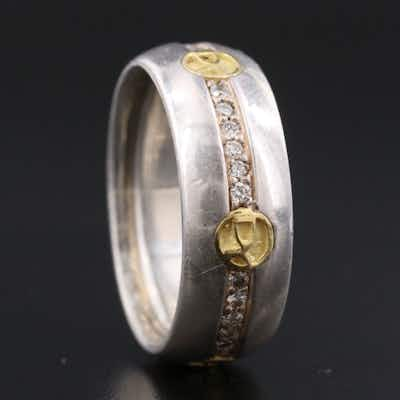

OUTPRICEDDavid Yurman DY Logo Sterling, 18K and 0.45 CTW Diamond Cigar Eternity Band
David Yurman "DY Logo" cigar band ring, sterling silver with 18K gold DY-logo stations and
13h left
Current bid$210 · 30 bids
Est. value$311
Your max bid$172
All-in at max$233
Projected close$328
Margin at bid$35
Details & price history →